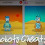
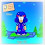
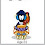
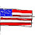
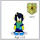

I have a new contest for you all to take part in!
I want you to draw a Flag from a country of your choice and write something interesting about the Flag, like the reason why it has that certain color or pattern etc anything you think will be interesting and relevant to the Flag you choose!!

NOTE: You must actually draw your Flag, no pictures from the Internet will be accepted!
Comment links to your pictures and your research at this this post and remember, it's your responsibility to check that your link works ;)
Have fun, you have a few days!
Winners will receive a V Flag ^_^
Jessie

-2.jpg)


259 comments:
«Oldest ‹Older 1 – 200 of 259 Newer› Newest»Cool I make one
Partisanboy
Oh oh oh ima enter!!!!!!
awsome!
gud luck
-Smart
here is my country and my country flag ((my country is syria :D))
http://i46.tinypic.com/2s9yjpk.jpg
heres the photo
The name Syria formerly comprised the entire region of the Levant, while the modern state encompasses the site of several ancient kingdoms and empires, including the Eblan civilization of the third millennium BC. In the Islamic era, its capital city, Damascus, was the seat of the Umayyad Empire and a provincial capital of the Mamluk Empire. Damascus is widely regarded as one of the oldest continuously inhabited cities in the world.
heres my reaserch hope u like it hope i win :D
-darkboy88
Here is my entry:
Picture:http://tinypic.com/r/14461d2/6
Country: Ukraine
Information:
Ukraine is my favorite country because its the home of the moderators and the home of chobots :) Vayersoft is in Ukraine too and in Florida in the Usa.
They speak the language of Ukrainian and english too! and some of them german.
In the 9th century, much of modern-day Ukraine was populated by the Slavic tribes.
During the 10th and 11th centuries, it became the largest and most powerful state in Europe!
Hope you enjoy jessie!!!!
-Muttly
Chobot name: muttly
http://i48.tinypic.com/wwkwnb.png
Ok here's why it has this pattern. During the revulutionary war, betsy ross only had those colors. She ran out of red and blue thred but she had enough for the flag but, she had an open space. So she decided to make stars as the states. Since there was only 13 colonies, there was 13 stars. But when the americans won the war, they made general washington president and it became the united states of america, And there was 50 states after that and there was of course 50 stars, and from then on, at every school we say the pledge of allegence. Also it is such a important thing it is never supposed to touch the ground. Also, the first flag was about 10-20 feet long. Also nowadays, we have flags up to 30-40 feet long at the bigger flags.
-jpenguin5858
P.S. Did i write too much? if so soz.
Here is About my Country And my Country flag! =D
(My country Is Israel)
http://tinypic.com/view.php?pic=2b1ifr&s=6
Israel officially the State of Israel Medinat Yisra'el is a country in Western Asia located on the eastern shore of the Mediterranean Sea. It borders Lebanon in the north, Syria in the northeast, Jordan in the east, and Egypt on the southwest, and contains geographically diverse features within its relatively small area. Also adjacent are the West Bank to the east and Gaza Strip to the southwest. Israel is the world's only predominantly Jewish state with a population of about 7.5 million people, of whom approximately 5.7 million are Jewish. The largest ethnic minority group is the segment denominated as Arab citizens of Israel, while minority religious groups include Muslims, Christians, Druze, Samaritans, most of whom are found within the Arab segment.
The modern state of Israel has its historical and religious roots in the Biblical Land of Israel, also known as Zion, a concept central to Judaism since ancient times, and the heartland of the ancient kingdoms of Israel and Judah. Following the birth of political Zionism in 1897 and the Balfour Declaration, the League of Nations granted Great Britain the Mandate for Palestine after World War I, with responsibility for establishing such political, administrative and economic conditions as will secure the establishment of the Jewish national home, as laid down in the preamble, and the development of self-governing institutions, and also for safeguarding the civil and religious rights of all the inhabitants of Palestine, irrespective of race and religion.
P.S. I Am starboy24. If i win The V_Flag I Want it to Get on Chobots.de To starboy24,Ok? but please Sent my V_Flag(if i win) To chobots.de ;)
Hope i win ^^
NOTE: Guys, Remember I want you to write things about the Flag, NOT the country :)
Here Jessie here is the link
http://natalinachobot.blogspot.com/
~ natalina
ps my flag is United Kingdom
Hehe! Here is my entry :
Country : Greece
Picture(flag):
http://i47.tinypic.com/jf8e1i.png
Information:
Greece is a modern European country
with a strong democratic government and a developing economy.The capital is Athens, hosting about one third of the country's population.
In 2000 Greece adopted the Euro,replacing the drachmas the official currency.
The Greek language has been in use since prehistoric times with the earliest evidence of its written versions surviving to our date.
This was my research:)
Hope you like it;)
My country is greece and i know many thingz about it:)
thank you^^
~tania1998
Oooops!!!
Sorry jessie!!!
Here are some information about the FLAG of greece :
The flag of Greece consists of nine blue and white alternating horizontal stripes with a blue square on the top left that contains a white cross.
According to the popular belief, the blue and white colors of the flag represent the color of the sea and waves that engulf the country in all sides but the north. The stripes are nine, as many as the letters in the greek word for freedom (eleytheria).
Thats was the right one!!
Sorry jessie =P
~tania1998
Heres my 2nd entry
http://i46.tinypic.com/2s9yjpk.jpg
:photo
The colors and design of the Syrian flag were taken from the Pan-Arab flag and inspired by the flag of the Arab Revolt. The stars stand for the fact that Syria was the first country to use the Pan-Arab colors.
http://i46.tinypic.com/fas9ia.jpg
Thisis my country ! (Romania)
The commune is Bucharest ! Here is above 99.00 people !
In december is Romania Party !
In Cucharest are more shops , everyyear one more !
Here is ,,ziua recunostintei'' (turkey day) In november
~dasdasff
Hello my country is on Lithuania!
http://tinypic.com/view.php?pic=nphnyh&s=6
Lithuanian flag is Yello , green and then red , pretty simple .Yellow represents the sunny days , green represents the Earth and red represents the sadness.Lithuania has many tourists.Lithuania is famous for a hill of crosses.People go to pray there.There are over 1000 crosses there!People put money there and nobody takes it.Many people go to see that hill.Lithuania is in the Europe.Lithuanias capital city is called Vilnius. As i know many people from Lithuania play chobots!
Click on the link to see the flag :) thank you for reading!
Hope u like It!! The Info Is On The Picture.
http://i46.tinypic.com/30ww29d.jpg
im doing malaysia, its a small country at the southern part of asia and its pretty hot there but also very ncie food. and i wrote some information about the country, because i've lived there for a couple years so i know the country alot.
heres link to the flag i drew
http://i46.tinypic.com/2vtxpap.jpg
The 14 stripes on the Malaysian flag represent the 14 states of Malaysia (Perlis, Kedah, Perak, Kelantan, Terengganu, Pahang, Johor, Malacca, Negri Sembilan, Selangor, Penang, Sabah, Sarawak and the Federal Territories of Kuala Lumpur and Labuan). The blue square represents the harmony of the people.
The Malaysian National Flag consists of fourteen red and white stripes (along the fly) of equal width, a union or canton of dark blue, a crescent and a star. The red and white stripes stand for equal status in the federation of the member states and the federal government. The union or canton of dark blue represents the unity of the peoples of Malaysia. The union contains the crescent which is the symbol of Islam, and the star, the 14 points of which symbolise the unity of the 13 states of the federation with the federal government. The yellow of the crescent and the star is the royal colour of the Rulers.
The dark blue stands for the unity of the Malaysian people. The crescent moon is a symbol of the official religion Islam. The 14 pointed star symbolises the unity of the 13 states and the federal government. The yellow is the colour of Their Highnesses the Rulers of the Malay States.
i hope you like my information and my flag i drew.
~blacky321
Here Is My Other one Its The Japanese Flag! Info I On Picture.
http://i50.tinypic.com/2lsz8ly.jpg
http://i45.tinypic.com/2z9cnm1.jpg
Heres hope u like it :)
But i dont live in russia just made it for the contest :)
All information is on the picture!!!
Heres mine
http://i49.tinypic.com/5lypuv.jpg
The 13 red and white stripes represent our first 13 states
The 50 stars represent all of our 50 states. The first state we ever had was Delaware with its capital Dover.And the last state Hawaii whos capital is Honolulu
http://i45.tinypic.com/2hcexxv.png
Country:India
Information About Flag;
Indian flag, representing India's long struggle for freedom is a national treasure. It signifies the status of India as an independent republic. The Indian National Flag came into being in its present form at the meeting of Constitutional Assembly on 22nd July 1947. Since then it has first served as the National Flag of Dominion of India from 15 August 1947 to 26 January 1950 and thereafter, National Flag of Republic of India. The Indian National Flag was designed by "Pingali Venkayya". The flag contains three equal strips of Saffron, White and Green colors respectively. The ratio of its width to its length is two is to three.
A navy blue color "Chakra" known as 'Ashoka Chakra' having twenty-four spokes, is present in the middle of the white strip. According to standard set down by ISI (Indian Standard Institution) it should occupy seventy five percent of the space of the white strip.The National Flag is one of the most respectable national symbols. There are strict laws regarding its manufacturing and its hoisting. The official flag specifications require flag to be made up of just 'Khadi'. It is a special hand spun yarn made up of cotton, silk and wool.
Hope you like it!
-darelnicky
Here is my picture
http://i48.tinypic.com/qnjpj4.jpg
I was drawing for macedonian flag
I drew it bc i love my country .
my picture is
http://i50.tinypic.com/15nahzk.jpg
Ukraine was known as “Kievan Rus” (from which Russia is a derivative) up until the 16th century. In the 9th century, Kiev was the major political and cultural center in eastern Europe. Kievan Rus reached the height of its power in the 10th century and adopted Byzantine Christianity. The Mongol conquest in 1240 ended Kievan power. From the 13th to the 16th century, Kiev was under the influence of Poland and western Europe. The negotiation of the Union of Brest-Litovsk in 1596 divided the Ukrainians into Orthodox and Ukrainian Catholic faithful. In 1654, Ukraine asked the czar of Moscovy for protection against Poland, and the Treaty of Pereyasav signed that year recognized the suzerainty of Moscow. The agreement was interpreted by Moscow as an invitation to take over Kiev, and the Ukrainian state was eventually absorbed into the Russian Empire.
-Chill
x) good luck for me :D
My flag is on!!
United States!
The stars on the united states flag stands for 50 states in united states of america!!
the 13 stripes the flag has stands for the orignal 13 colonies.
When united states was founded :D
white means=bravery
blue means=strength
red means= believes in Justice.
here is the link!
C:\Documents and Settings\user\My Documents\My Pictures\American flag.bmp
by:cute_kitty12
if i win send it to this chobot cute_kitty12
Here is my flag from my country:ROMANIA:)
http://i47.tinypic.com/ojfqzs.png
Red, yellow and blue were found on late 16th century royal grants of Michael the Brave, as well as shields and banners.During the Wallachian uprising of 1821, they were present on the canvas of the revolutionaries’ flag and its fringes; for the first time a meaning was attributed to them: “Liberty (sky-blue), Justice (field yellow), Fraternity (blood red)”.
The tricolour was first adopted in Wallachia in 1834, when the reforming domnitor Alexandru II Ghica submitted naval and military colors designs for the approval of Sultan Mahmud II. The latter was a “flag with a red, blue and yellow face, also having stars and a bird’s head in the middle”. Soon, the order of colors was changed, with yellow appearing in the center.
In 1848, the flag adopted for Wallachia by the revolutionaries that year was a blue-yellow-red tricolour (with blue above, in line with the meaning “Liberty, Justice, Fraternity”). Already on 26 April, according to Gazeta de Transilvania,
Romanian students in Paris were hailing the new government with a blue, gold and red national flag, “as a symbol of union between Moldavians and Muntenians”.Decree no. 1 of 14/26 June 1848 of the provisional government mentioned that “the National Flag will bear three colors: blue, yellow, red”, emblazoned with the words “DPEПTATE ФPЪЦIE” (Dreptate, Frăţie or “Justice, Fraternity”). It differed from earlier tricolors in that the blue stripe was on top, the princely monogram was eliminated from the corners, as was the crown atop the eagle at the end of the flagpole, while a motto was now present.
Hope you like it jessie:)
I want a V flag xD
gelu_cool
Ps.Opps soo long xD
@cute_kitty:
Hi!you need post your link uploanded in www.tinypic.com andpost the link here:)

Hello my chobots name is Kash50905 and my flag is on India because im indian here is the link to the picture:
http://kash50905chobotscheats.blogspot.com/
and something important about this flag is
The National flag of India is in tricolour ( TIRANGA) of deep saffron (Kesari) at the top, white in the middle and dark green at the bottom in equal proportions.The Indian flag is a horizontal tricolour in equal proportion of deep saffron on the top, white in the middle and dark green at the bottom. The ratio of the width to the length of the flag is two is to three. In the centre of the white band, there is a wheel in navy blue to indicate the Dharma Chakra, the wheel of law in the Sarnath Lion Capital. This center symbol or the 'CHAKRA', is a Buddhist symbol dating back to 200th century BC.
Its diameter approximates the width of the white band and it has 24 spokes, which intends to show that there is life in movement and death in stagnation. The saffron stands for courage, sacrifice and the spirit of renunciation; the white, for purity and truth; the green for faith and fertility. The design of the National Flag of India was adopted by India's constituent assembly on 22nd july, 1947. It's use and display are regulated by a code. The flag symbolizes freedom. The late Prime Minister Pandit Nehru called it a flag not only of freedom for ourselves, but a symbol of freedom for all people.
The Indian national flag was hoisted on Mt. Everest, the highest peak in the world, on May 29 1953, along with the Union Jack and the Nepalese National flag.
Bhikhaji Rustom Cama was the first Indian to have raised an Indian flag on foreign soil and announced to the world our political flight with the British for the country's Independence. Madame Cama's flag had green on the top, golden saffron and red at the bottom. Eight lotuses, representing the eight provinces, were lined on the Indian flag. Vande Mataram was written in gold with the Crescent towards the hoist of the flag and the Sun on the other side.
In 1971, the Indian flag, went into space on board Apollo-15. It flew into space as a medallion on the spacesuit worn by Cosmonaut Wing Commander Rakesh Sharma, during the Indo-Soviet joint space flight in April 1984.
PROUD TO BE INDIAN :)
lol Hope you liked this Jessie2000 and all Chobots!! :)
Bye.
~Kash50905
Hey I made one and there is it ^_^:
I am From Kuwait Sooo I will Talk about Kuwait's Flag xP
At First here is the website :
http://i50.tinypic.com/14wvpmg.jpg
Facts about the flag of Kuwait
Kuwaiti flag: three equal horizontal bands of green (top), white and red with a black trapezoid based on the hoist side, and the design, which dates to 1961, according to the knowledge of the Arab Revolt in World War 1
I wish you will like It Jessie :3
-FtoOoTa
Chobot : ftooota98
Here is mine:
(I chose Lebanon my country)
http://i46.tinypic.com/ztxg5y.jpg
Lebanon is a country I care of,maybe others dont but I do. Its famous for its Cedar Tree ,which Phoenicians used,and is now ILLEGAL to cut!Its capital ,Beirut.It has many ancient cities like Byblos, but has a small population as it is a very small country.Lebanon is located in the Mediterranean sea,in the middle east, next to Syria,Israel,Cyprus.....I always go to Farayah ,a mountain, to ski, or Cedars, too.The main language there is Arabic.It is important because it Was part of the Phoenicians ,many centuries ago, and the Phoenicians created the alphabet and without the Phoenicians we would still write HIEROGLYPHICS! The tree on the flag represent the cedar tree,which is many years old (more than 100-200!).The only bad thing there is the pollution....but its the only bad thing and we are doing our best to avoid it.I love this country and I care of it more than I care about the whole world!!
Thx for taking your time to read this, I hope I win the V-Flag.Sorry if I wrote too much..
Respectfully,
Pito100
The flag of the Republic of Estonia
http://i50.tinypic.com/2yzg7z6.png
The meaning of the color:
blue - the sky, lakes and reflection of the sea,and a symbol of allegiance to the national treasures and truth
black- the color of the soil
white- the pursuit of the people to happiness and to the light side
I chose it, because Estonia is my motherland :)
woot im gonna enter!
also i really have wanted a v flag since vayer rained em when the first 2 ppl got them! lol
Hi jessie ;0 we havent hosted these kind of thign in a while.
I decided to do "japan"
you can look at the info on my picture :)
http://i49.tinypic.com/2exlgm0.jpg
My entry!
Drawing:
http://i50.tinypic.com/125051x.jpg
informations:
Geography
he United Arab Emirates, in the eastern part of the Arabian Peninsula, extends along part of the Gulf of Oman and the southern coast of the Persian Gulf. The nation is the size of Maine. Its neighbors are Saudi Arabia to the west and south, Qatar to the north, and Oman to the east. Most of the land is barren and sandy.
Government
Federation formed in 1971 by seven emirates known as the Trucial States—Abu Dhabi (the largest), Dubai, Sharjah, Ajman, Fujairah, Ras al-Khaimah, and Umm al-Qaiwain. In addition to a federal president and prime minister, each emirate has a separate ruler who oversees the local government.
History
Originally the area was inhabited by a seafaring people who were converted to Islam in the 7th century. Later, a dissident sect, the Carmathians, established a powerful sheikdom, and its army conquered Mecca. After the sheikdom disintegrated, its people became pirates. Threatening the Sultanate of Muscat and Oman early in the 19th century, the pirates provoked the intervention of the British, who in 1820 enforced a partial truce and in 1853 a permanent truce. Thus what had been called the Pirate Coast was renamed the Trucial Coast. The British provided the nine Trucial states with protection but did not formally administer them as a colony.
The country signed a military defense agreement with the U.S. in 1994 and one with France in 1995.
he British withdrew from the Persian Gulf in 1971, and the Trucial states became a federation called the United Arab Emirates (UAE). Two of the Trucial states, Bahrain and Oman , chose not to join the federation, reducing the number of states to seven.Sheikh Zayed bin Sultan Al Nahyan, the founder of the UAE and ruler of the federation since 1971, died in Nov. 2004. His son succeeded him. In Jan. 2006, Sheik Maktoum bin Rashid Al Maktoum, the prime minister of the UAE and the emir of Dubai, died. Crown Prince Sheikh Muhammad ibn Rashid al-Maktoum assumed both roles.
The meaning of the colors:
White - peace and honesty
Red - hardiness, bravery, strength & valour
Green - hope, joy and love and in many cultures have a sacred significance
Black - the defeat of enemies or determination
Thnx for reading :)
Hope i win
-Hugs-
snooopy63
Hey guyz!
Awesome contest I like it...
Well, my country is Hungary.
This is my picture:
http://i49.tinypic.com/e8pv05.png
So,Hmm my history of Hungary's flag?
That's it:
The flag of Hungary is horizontal tricolour of red, white and green.
Red color symbolized the "force" White color symbolized "loyalty" and the Green symbolized "hope".
When St.István become a king
The flag was red and green.
The design:
The official Hungarian state flag does not contain the Hungarian coat of arms, but that is often used at solemnial celebrations.
Good luck everyone :D!
-Vklaci
http://i46.tinypic.com/whyyqa.jpg Here is Lithuania flag. Yellow is sun, green is a grass and red is blood.
~Paulyte2009~
i chose canada ^_^
http://i49.tinypic.com/fx5x7k.png
hehe, i got a new editing program so i got to draw this one nicely ^_^
and here's my research:
The National Flag of Canada, also known as the Maple Leaf, is a red flag with a white square in its center, featuring a stylized 11-pointed red maple leaf. Its adoption in 1965 marked the first time a national flag had been officially adopted in Canada to replace the Union Flag. The Canadian Red Ensign had been unofficially used since the 1890s and was approved by a 1945 Order-in-Council for use "wherever place or occasion may make it desirable to fly a distinctive Canadian flag". In 1964, Prime Minister Lester B. Pearson appointed a committee to resolve the issue, sparking a serious debate about a flag change. Out of three choices, the maple leaf design by George F. G. Stanley and John Matheson based on the flag of the Royal Military College of Canada was selected. The flag made its first appearance on February 15, 1965; the date is now celebrated annually as National Flag of Canada Day.
Many different flags have been created for use by Canadian officials, government bodies, and military forces. Most of these flags contain the maple leaf motif in some fashion, either by having the Canadian flag charged in the canton, or by including maple leaves in the design. The Royal Union Flag is also an official flag in Canada, used as a symbol of Canada's membership in the Commonwealth of Nations, and of its allegiance to the Crown. The Union Flag remains a component of other Canadian flags, including the provincial flags of British Columbia, Manitoba and Ontario.
The Royal Union Flag has been used in Canada since the 1621 British settlement in Nova Scotia. Since the surrender of New France to the United Kingdom in the early 1760s, the Royal Union Flag, called the Union Jack (or, less commonly, Union Flag) in the United Kingdom, was used as the de jure national flag, as in the United Kingdom, until the adoption of the current flag in 1965. As a symbol of the nation's membership in the Commonwealth, the Royal Union Flag remains an official Canadian flag and is flown on certain occasions.
~alexa
Here's mine!
http://i47.tinypic.com/2q1teae.jpg
i hope you like it :)
-34sr
http://i46.tinypic.com/2vchpx4.jpg
-na9er
wooh i fogot info here
i drew ukraine flag cuz i luv chobots and all my fa mods are ukranian it that flag has 2 of my fav colors =P
-na9er
oh!i wrote the text on it!well i think its a nice picture....!!!i tryed so much to make it!its about greek flag! thanks! (its me dimila1999)
http://tinypic.com/r/11jwzyd/6
The info is in the picture :)
http://img694.imageshack.us/img694/1724/89767072.png
My country is Uruguay
Here is its flag: http://img402.imageshack.us/img402/8833/0303101336.jpg
Some info about it: The sun emblem is the Sun of May, it is a symbol of freedom and independence. The nine stripes represent the nine provinces of Uruguay, which existed at the time of the flags creation.
Hioe you like it.
-MORFEUS-

heres mine! I really hope i win:D
http://i49.tinypic.com/2ldhimg.jpg
I'm so excited i've always wanted a V flag! xD if i win could i have a light blue v flag :)
http://i420.photobucket.com/albums/pp290/jordsno1/romania.jpg
Picture Above ... Facts Under
Full Name: Romania
Capital City: Bucharest
Area: 237,500 sq km, 91,699 sq miles
Population: 22,270,000
Time Zone: GMT/UTC +2 ()
Daylight Saving Start: end of March
Daylight Saving End: end of October
Languages:
Romanian (official)
Much closer to classical Latin than the other Romance languages.
Hungarian (other)
This is spoken in Transylvania.
Religion: Eastern (Romanian) Orthodox (87%), Protestant (6.8%), Roman Catholic (5.6%), other
Currency: Romanian Leu (L)
http://i46.tinypic.com/rtf9mb.jpg thats mine hope i win good luck everyone i know lots about what i wrote about i did a project in school about the thing i wrote about -footsoilder-
hi jessie how are you i have done a flag drawing and it's by me i will give you the link
http://i45.tinypic.com/4qmvqt.jpg
i hope you like it ;) bye bye
My Entry: Aneelio-cb.blogspot.com
LOL AND I FROGOT SAY....
DRACULA IS FROM TRANSYLVANIA xD
Urmm guys....
Jessie said...
NOTE: Guys, Remember I want you to write things about the Flag, NOT the country :)
;)
http://i47.tinypic.com/1r6ex5.jpg
***rocklee98***
Hello jessie well i made my flag i am from oreland heres my link=)http://i49.tinypic.com/23rpcmt.png and heres some information about ireland:)well the capital is Dublin and the currensty is euuro irealnd was spit into the republic of ireland and nothern ireland nothern ireeland now belongs to eneland:| ok well i am in the rebublic and ireland has miths off leprachuns but thats not real and the one with the pot of gold is at the end of the rainbow isnt true too and well irelands pupulation is about 4,000,000 well here is some nice information about ireland i hope you enjoyed may the luck of the irish always be with you=)
Here is my first entry i will be doing several ut here is my first
country England
Picture : http://i45.tinypic.com/nf16w1.jpg
Info:
As the above picture of the English Flag indicates the overall background is white
The description of the English Flag is as follows:
White with a centred red cross that extends to the edges of the flag
According to Ancient and Heraldic traditions much symbolism is associated with colors. The colors on the English flag represent the following:
White - peace and honesty
Red - hardiness, bravery, strength & valour
The basic style shown in the picture of the English flag is described as Cross reflecting the central design of the flag pattern
All Flag pictures depict flags flying, from the viewer's point of view, from left to right
The shape and flag ratio of the English flag is described as 1:2 ( length twice the height )
The Meaning & History of the English Flag and St. George - The English flag depicts the cross of St. George, the Patron Saint of England. The feast of England's patron saint is celebrated on 23rd April and Knighthoods of the Order of the Garter are also bestowed on 23rd April
http://tinypic.com/usermedia.php?uo=2099HrFb%2FqtBHAddcOSlY4h4l5k2TGxc
That's my pic.
It was reported in 1776 the first American flag was made by Betsy Ross. This is controversial though because many others have claimed they created the American Flag.Today the American flag is a worldwide symbol of America along with the bald eagle.The flag originally had 13 stars arranged in a circle. All 13 starts represented one of the original colonies of 18th century America.
Today the starts of the flag represent one of the 50 certified states. Of the red and white stripes, the red symbolizes valor, White symbolizes purity; and innocence, and blue represents Vigilance; Perseverance and Justice. Like the original flag of America there are 13 striped just like the 13 starts of the 1776 flag. This is because they both symbolize the first 13 colonies.
So in conclusion, the flag as been through wars, rebellions, and 200 years of history.
Sources: http://www.usa-flag-site.org/history.shtml
Ha not 2 shabby eh? It's even grammatically correct XD
Heres my link of the flag of Brazil:
http://i46.tinypic.com/2e31zqv.jpg
I dont understand if I want to put the informations of the flag here or in the flag, so, I put the informations in the flag and I will put the informations here.
This are the informations:
Green: The green has many meanings: it was the color of the royal house of Braganza (which was part of Dom Pedro I proclaimed the independence of Brazil) and the Austrian Imperial House of Habsburg (family Leopoldina, wife of Peter D. I, Prince Regent), in actuality, it is said that green also represents the wealth of our forests;
Yellow: is the poetic representation of the sun, which illuminates the Brazil closely in most of the year. Yellow was also the symbolic color of the Habsburg dynasty. Today some argue that the gold would also be found in Brazilian soil.
Blue circle in central: symbolizing the celestial sphere, would also represent the great sea voyages of the Portuguese, the history of Christianity, and the mother of Jesus, patroness of Brazil and Portugal.
White band cross symbolizes the great river Amazon.
The words "Order and Progress" motto sums up a French positivist philosopher Auguste Comte: "love as a principle, based on the order and progress as an end" and was suggested by Republican Benjamin Constant.
http://i47.tinypic.com/nn330k.jpg
Thats my pic :) Might make a 2nd one...don't know but I hope you like this. Good luck all and great contest, All chobots will have their flags, I bet it will look great!
The flag im gonna talk about is the Scottish flag :)
I picked it coz I am Scottish :)
Pic: http://i50.tinypic.com/qq69l5.png
Info: Its correct name is the Saltire. The Scottish flag features a white cross on a blue background. The white cros represents the cross of St. Andrew -who is the paitrin saint of Scotland- which was turned on its side.
St Andrew is also the patron saint of Greece and Russia and was Christ's first diciple.
These are teh meanings of the colours used on the Scottish flag.
White - peace and honesty
Blue - vigilance, truth and loyalty, perseverance & justice
It was adopted by Scotland around the 16th Century and has been used ever since as Scotland's national flag.
Thats all my info :) I used what I knew and used a bit from the internet which I then wrote out in my own words :) Hope ya liked it :)
Bumble94566 :)
here is my flag and im drbinman
http://i48.tinypic.com/2e3pizc.jpg
here is my writing about the flag=
ireland rocks,no one really knows the country,the capital county is Dublin,
the biggest county is Cork, we celebrate st.patrick's day ,its really cold,the ireland flag colour is green white gold.
im drbinman .
let the best win ! :)
ps i didn't copy and paste the pic. I drew it on my comp.
hi guys its me drbinman. i changed my name and i put a pic up. here.
here is my flag and im drbinman
http://i48.tinypic.com/2e3pizc.jpg
here is my writing about the flag=
ireland rocks,no one really knows the country,the capital county is Dublin,
the biggest county is Cork, we celebrate st.patrick's day ,its really cold,the ireland flag colour is green white gold.
im drbinman .
let the best win ! :)
Ok so i chose Poland:D
The colors of the flag of Poland are white on the top and red at the bottom:D
Theres a legend that says why these are the 2 colors:D
Ok so once upon a time there was three brothers all of them had horses and they wher searching for a territory that they could live on.
So the first on named Rus in polish went his own way and left his 2 brothers alone.The territory that Rus found called Russia (RUSsia)So the 2 brothers left(Lech and Czech)continued on and wher riding their horses for many many days then Czech found a territory for him that he like very much.He decided to call that territory ''Czech Republic''(i think) and he left Lech alone.Lech continued for loads of days then he was tired so he took a nap near a tree.Then he saw a white eagle and at the same time the sun was going down.And he said to himself:white eagles means luck so i will keep this territory and i will call it Gniezno(now Gniezno is Krakow i think...) Poland was going to be the name of the country.And thats how the flag of poland was invented.The white on the top is the white eagle he saw on the top of the tree and the red was the sun going down.
OK yeah and heres a pic of the flag:
http://i45.tinypic.com/aawubo.jpg
P.S. you may think that i took it from the internet but no i drew it on paint besides it soooo easy to draw XD
OKI so i hope you like it:D
~kiki_and_ada
Hi!
My picture is at:
http://grab.by/2O2h
country:Devon
Information:
The devon flag was made quite recently, in 2003 actually. It is a symbol of pride in the country. After two polls on the bbc devon website, 49% of the votes were saying yes this is a great design. The flag was created by Ryan Sealey, a student at exeter university.
Thanks a load,
~bunsee~
p.s, my chobot name is actually bunsee, and congrats to people that became agents! :D (just remember if u lost the poll isn't the only way to become an agent!)
http://2.bp.blogspot.com/_OvrCdiDT1vg/S46s19jmqzI/AAAAAAAAAOQ/-pYM9yKpBzM/s1600-h/gfhntgfnjm.bmp
There you go, hope its good enough.
Here is mine http://i45.tinypic.com/dmr7d1.jpg
I think you guys would like this one! :)
Scared
My flag: http://i45.tinypic.com/2qv6xxh.jpg
I chossed my flag - Latvia's flag ;)
Its my country too! :)
Umm this is how the flag was created: In one war, there was killed a Latvian-General and someone putted him on a white sheet. Along the edges of the red blood of honor served, but the middle remained White!! :)
Nice story, huh! =PP! 8D
Umm.. if i win the V.flag, i would like the green one ;)
Like William Does, that color =D!
This is mine my chobots name is lewis http://i48.tinypic.com/wwkwnb.png
This is My Flag the place i live is England http://mychobotscomps.blogspot.com/
Brazil covers nearly half of South America and is the continent's largest nation
http://i597.photobucket.com/albums/tt58/chris6552/brazilpic.jpg
~Privacykid~
hi chobots long time no see, I drew a Japan flag on paint.(im not from Japan XD)
here it is
http://i47.tinypic.com/n2ihcm.jpg
hope u like it
~jamesbot~
@ drbinman
I totally agree
here is my flag
http://i45.tinypic.com/314bleq.jpg
the flag of England also known as
St Georges cross appeared in the middle ages. it got its name by England's patron saint St George who was said to of slayed a dragon.in the middle ages it was used as an emblem but was yet to become England's Flag.
good luck everyone
jadenyuki73 xD
by the way it is the flag of England
XD
http://tinypic.com/r/2hh0p41/6
Here :))
Country : Malta
The Flag of Malta is red and white . In the white side there is a cross : The George cross its Geroge gave us the cross because of our courage in wars . :)
Have fun jess x)
franci
http://i45.tinypic.com/358zbf5.jpg
^^^^^^^^^^^^^^^^^^^^^^^^^^^^^^^^^^^
My country is the gorgeous Green Isle Ireland.
Ireland has a very temperate climate. It is usually Raining and we have the odd day of sunshine. Ireland's countryside is a farmer's dream. Irelands flag consist's of Green, White and Orange. The Green stands for the Catholics, The Orange for the protestants and the white for the peace between them. Ireland gained its independence in 1921 from great britian. Great Britain has power over 6 of our counties; Fermanagh, Armagh, Antrim, Down, Derry and Tyrone. Ireland's an over great place :P!!!
My image is not copied. I will give you prove if you want it.
http://tinypic.com/r/2u3w6fb/6
i picked germany WHY YOU ASK? WELL my famiyl came from germany my family was farmers till world war II then when hitler came my family left to america my family loved the US. I always wondered how is germnay iw as told that there is a beer festival my fav xD. I learned to speak soem german like ich spiele chobots! that means i play chobots! enjoy my chobots name is asdkk i hope to just win for da fun of it im not craz for a v-flag :)
i just made a canada at school. how do i post it
Hi Jessie Here Is mine I hope you like it :') I spent atleast 2 hours on this lol! And I'm in for the win XD Well, Maybe, We'll find out soon on the next episode of Flag Busters!
Link: http://i47.tinypic.com/2qnr1xz.jpg
Here's my flag I drew :)
http://i47.tinypic.com/2qdznu9.jpg
And
The larger of the stars represents leadership and the four smaller stars represent the four classes of people underneath the leader.
jazzyy567
everybody is going to do japan (red dot flag) XD
not me. i live in america but there is an american flag on chobots. i will do... canada!
i was about to do ukraine but i searched what the flag looked like... it looks to easy! XDD
i made another one jessie ... :))
The Flag of Malta is red and white. On the white side there is a cross called The George Cross.
George was a king and he gave us his cross because of our courage in wars
http://tinypic.com/r/2iha6gy/6
By the way it is writing bernardettte when im leaving this comment ... its my other account but in chobots real .. im FRANCI :))
THANKYA
franci

my photos on me and redsox567's chobot blog! here it is!
http://giaginaschobotblog.blogspot.com/
its really bad but ive wanted a v flag ever since i joined!
its the american flag (it was hard to make 50 stars! lol)
http://tinypic.com/r/jkvamb/6
here is my pic and my flag is Haiti:Information:The flag of Haiti was adopted on February 25, 1987.The top half is blue and the bottom is red.the middle picture is the coat arms of Haiti.The palm is topped by the Cap of Liberty.and I chose Haiti because i wanted to help it ;)
~Chrsidog93 (and if i win i want my V flag in black) :P
dude i already did canada. how do u post it
http://i47.tinypic.com/2aipxxt.jpg
Did you know that another name for the american flag is Old Glory
Good Luck all
EDITED VERSION PLEAS READ THIS ONE
http://tinypic.com/usermedia.php?uo=2099HrFb%2FqtBHAddcOSlY4h4l5k2TGxc
That's my pic.
It was reported in 1776 the first American flag was made by Betsy Ross. This is controversial though because many others have claimed they created the American Flag.Today the American flag is a worldwide symbol of America along with the bald eagle.The flag originally had 13 stars arranged in a circle. All 13 starts represented one of the original colonies of 18th century America.
Today the stars of the flag represent one of the 50 certified states of the United States. Of the red and white stripes, the red symbolizes valor, white symbolizes purity; and innocence, and blue represents Vigilance; Perseverance and Justice. Like the original flag of America there are 13 stripes just like the 13 stars of the 1776 flag. This is because they both symbolize the first 13 colonies.
Over the years there's been 28 different designs of the American flag. Most are not remembered because they lasted for less than 10 years. The most recent flag has lasted for 49 years. This is already more than the all other designs. A fun fact is the 2nd design of the flag had 15 stripes, not 13. They changed this after figuring eventually they wouldn't have space for stripes of each state on the flag.
The use of the flag in America today is very common. Most public buildings like schools and government offices have the flag along with their state flag on display. Even private residences are suppose to display the flag on holidays like Memorial Day and Independence day
Other names of the flag include Stars and Stripes, Old Glory, and the Stars Spangled Banner. The Stars Spangled Banner is also the name of the national anthem in America. This shows the importance of the American flag inside of America.
So in conclusion, the flag as been through wars, rebellions, and 200 years of history.
Sources: http://www.usa-flag-site.org/history.shtml
http://tinypic.com/view.php?pic=2ex4ndw&s=6
sorry this is the pic link
-Justadude
Heres mine!
http://toxicchobot.blogspot.com/2010/03/v-flag-contest-entry-1.html
Click on the pic to see it bigger!
-Toxicchobot
http://tinypic.com/r/303a9nm/6
blue-peace
red-war
yellow- shape star sun
sun-it has eight rays that represent the eight provinces that fought spain
star- 3 stars 3 provinces mindanao visayas and luzon
-neon20
picture of flag is on my blog that is called www.mrcarfan9000scheats.blogspot.com (in address bar)
At 3.79 million square miles (9.83 million km2) and with about 309 million people, the United States is the third or fourth largest country by total area, and the third largest both by land area and population. It is one of the world's most ethnically diverse and multicultural nations, the product of large-scale immigration from many countries.[7] The U.S. economy is the largest national economy in the world, with an estimated 2008 gross domestic product (GDP) of US $14.4 trillion (a quarter of nominal global GDP and a fifth of global GDP at purchasing power parity).There are lots of famous people too.
Hey here's my link and by the way this is luvlie not budyruls ;)
http://i45.tinypic.com/2eqc5kz.jpg
Hope you enjoy! =D
-luvlie
Heyyaa! ^^ Heress mahh enteryy
http://i50.tinypic.com/4qlr8k.png
Flag: Wales (i live there he hee)
The flag Has a dragon on it it witch is called the Welsh Dragon The history of the flag is very intersting! the red dragon (its called yr draig choch in wlesh) And the white dragon (yr draig wyn in wlesh) Had a fight to see who won but the red dragon won! and now! (the flag was made/adpoted in 1959) So basically
Its a red dragon in a sence with a white pale sky and a green feeld
Red
White
Green is the Welsh colours!
Hope you like it! Good Luck yall!
Yellowbell XxX
My Country is The United States of America. It was first made by Betsy Ross in the revolutionary war of 1775-1783 it was called the Grand Union Flag. it was used by George Washington during the war. It has 9 stripes or 13 (now) and used to have 13 stars for the 13 colonies of America Now america has 50 stars 13 stripes of red and white a blue Union jack on the top left corner. It used to be close to the british east companies flag. It was adopted June 14,1777 our current flag was made on July 4th 1960.. Thanks! :D and my pic I drew: http://tinypic.com/r/sym104/6
~howdoifindaname
I spellt Welsh wrong oops!
http://i48.tinypic.com/2qs73a0.jpg
this is the candian flag =)
The flag is red and white, the official colours of Canada as appointed by King George V in 1921, with a stylized 11-point red leaf in its centre and since canada has a lot of maple trees and we make syrup with those trees so one of their leaves is there.The maple leaf was historically used from the early days of Canada to symbolize the land and its people. It was first proposed as an emblem of Canada in 1834 when the Société Saint-Jean-Baptiste was founded; shortly thereafter, in 1836, Le Canadien, a newspaper published in Lower Canada, referred to it as a suitable emblem for Canada.The maple leaf was for many years the symbol of the Canadian Armed Forces and was used to identify Canadian contingents in the two world wars. But it wasn't to receive official status until the National Flag of Canada was proclaimed by Her Majesty the Queen in 1965.Well before the coming of the first European settlers, Canada's aboriginal peoples had discovered the food properties of maple sap, which they gathered every spring. According to many historians, the maple leaf began to serve as a Canadian symbol as early as 1700.
info is from http://www.pch.gc.ca/pgm/ceem-cced/symbl/df1-eng.cfm
Here is my picture, my words are in the picture, I hope you enjoy! Streaming! :))) Here is the link! ^^
http://i46.tinypic.com/5l99pt.jpg
Please go to
http://chobotdemila.tk/
"V-flag entry"
Flag was done on paint
and info is in the post
demi
Here's mah Finnish flag xD
I did Finland because I did some research on it for a school project and it's a pretty cool place :)
http://i48.tinypic.com/2e0pgn7.jpg
~Fuffley
Obviously a new flag was needed.
According to Betsy Ross's dates and sequence of events, in May the Congressional Committee called upon her at her shop. She finished the flag either in late May or early June 1776. In July, the Declaration of Independence was read aloud for the first time at Independence Hall. Amid celebration, bells throughout the city tolled, heralding the birth of a new nation.
Much suffering and loss of life would result, however, before the United States would completely sever ties with Britain. Betsy Ross herself lost two husbands to the Revolutionary War. During the conflict the British appropriated her house to lodge soldiers. Through it all she managed to run her own upholstery business (which she continued operating for several decades after the war) and after the soldiers left, she wove cloth pouches which were used to hold gunpowder for the Continentals.
On June 14, 1777, the Continental Congress, seeking to promote national pride and unity, adopted the national flag. "Resolved: that the flag of the United States be thirteen stripes, alternate red and white; that the union be thirteen stars, white in a blue field, representing a new constellation."
Well that's it, I hoep you enjoyed the information about Betsey the creator of the American Flag :).
Your's Truly,
Sweetgirl25
Here's the link to my picture :). Enjoy!
http://i46.tinypic.com/15mldvd.jpg
What Does the Maple Leaf Symbolize on the Canadian Flag?
Well here is the answer The present day Canadian flag consists of a red, 11-pointed maple leaf on a field of white, with wide, vertical red stripes banding the flag on the right and left sides. This modern-day flag was approved by Parliament on October 22, 1964. However, it was not proclaimed into law until it was approved on February 15, 1965 by Her Majesty Queen Elizabeth II, Queen of Canada. Official Canadian Flag Designed.
According to Canadian Heritage, in 1964 Prime Minister Lester B. Pearson informed the British House of Commons that the Canadian government intended to create a national flag. Pearson, according to Flags of the World, had seen Canadian soldiers sporting the maple leaf 50 years before and suggested it be incorporated into the flag.
Canadian Hertiage states that after debates narrowed to three basic choices for the flag, Mr. John Matheson and Dr. George Stanley were asked to finalize the design. Mr. Matheson was a Member of Parliament from Ontario. Dr. Stanley was Dean of Arts at the Royal Military College in Kingston. Together the men created the modern design for the Canadian flag. well here is mah pic too also i made this canada because i live in canada! pic: http://tinypic.com/view.php?pic=2570evo&s=6
http://tinypic.com/r/noyo04/6
dorey
the design is made of the cross of st. george overlapping the cross of st. andrew.
WHOOOO!!! This is my first chobot contest I joined, so I am excited to see who wins it! =3 ANYWAYZ here is my link for my drawing:
http://i47.tinypic.com/33dcmmv.jpg
Flag: Japan
Why?: Even though my mom is from El Salvador and my dad is from Poland, I and both my sisters LOVE Japan! (we watch anime and draw manga ^.^) Also I plan to go there one day. =D
I love the contury Japan so it made me happy that I learned stuff about it's flag here is some information that I found intersting.
Information: Before I start I will tell you guys (and girls) if you don't know Japan is a country in Asia and it's capital is Tokyo. (not really about the flag but, I am just saying it ^__^)
The circle in the middle of the flag represents the sun.
The white represents honesty and purity and the red disc is a sun symbol meaning brightness, sincerity and warmth.
The Japanese flag is called Hinomaru, which means "circle of the sun." In English it is sometimes called the "rising sun."
This flag has been used for over a thousand years, and no one knows who designed it or when. It was officially adopted as the flag of Imperial Japan on January 27, 1870
Hoped you enjoyed some fact I reserched!! ^.^
Oh! And forgot my chobots name is Marbell and THANKS FOR MAKING MY CHAT BACK!! =D
heres mine i did usa
the stars stand for each state aand the 13 trips stand for when we only had 13 states and usa is where the pillgroms landed and canada is part of usa and mexico and we make north amarica usa stands for united states of amarica we have had 44 presedints and they help are laws
hollywood is here and thats how we make movies and t.v shows
heres my link
http://i47.tinypic.com/2jd1jsj.jpg
i hope i win!!!!!
my flag has 51 stars because the 1 of the stars is for chobots. it also has a picture os jessie2000 because she is the best mod ever in the whole chobots world and (p.s jessie im ur number one fan because i have everyone os ur hairs) hopefuly i win a v flag
this is elifunny113
cool thats a good idea
and also i have asked chobots suuport a question on how to send things to chobots for contests and they never answered and its been like 10 days
Mine is chile :D
http://i49.tinypic.com/dfyuky.jpg
Some facts:
*on July 4th, 1812 the flag was raised for the first time during some banquet celebrating the independence of the usa!
*The red on the chile flag represents the heroes blood shed on the field of battle, the white represents the snow of the Andes range and the blue represents the clean Chilean sky!
*The chile flag was once confused with the holland flag!
Hope thats not to much. :D
~icey24635
The facts!
The Chinese flag has a red background with one large gold star and four smaller gold stars. The red background symbolizes the communist revolution. It is also the traditional color for the Chinese people. The large gold star represents Communism and the four smaller stars represent the four classes of people- peasants, workers, petty bourgeoisie, and patriotic capitalists.
Now for the picture!
http://2.bp.blogspot.com/_sp4DpyU5ql0/S47l-7QWDaI/AAAAAAAAAD0/QUbYRBUK6h8/s1600/abbey.bmp
This is how manly Betsey got to create the American Flag. It also explains how the design of the American Flag came about.
Betsy would often tell her
children, grandchildren, relatives, and friends of the fateful day when three members of a secret committee from the Continental Congress came to call upon her. Those representatives, George Washington, Robert Morris, and George Ross, asked her to sew the first flag. This meeting occurred in her home some time late in May 1776. George Washington was then the head of the Continental Army. Robert Morris, an owner of vast amounts of land, was perhaps the wealthiest citizen in the Colonies. Colonel George Ross was a respected Philadelphian and also the uncle of her late husband, John Ross.
Naturally, Betsy Ross already knew George Ross as she had married his nephew. Furthermore, Betsy was also acquainted with the great General Washington. Not only did they both worship at This is how manly Betsey got to create the American Flag. It also explains how the design of the American Flag came about.
Betsy would often tell her
children, grandchildren, relatives, and friends of the fateful day when three members of a secret committee from the Continental Congress came to call upon her. Those representatives, George Washington, Robert Morris, and George Ross, asked her to sew the first flag. This meeting occurred in her home some time late in May 1776. George Washington was then the head of the Continental Army. Robert Morris, an owner of vast amounts of land, was perhaps the wealthiest citizen in the Colonies. Colonel George Ross was a respected Philadelphian and also the uncle of her late husband, John Ross.
Naturally, Betsy Ross already knew George Ross as she had married his nephew. Furthermore, Betsy was also acquainted with the great General Washington. Not only did they both worship at This is how manly Betsey got to create the American Flag. It also explains how the design of the American Flag came about.
Betsy would often tell her
children, grandchildren, relatives, and friends of the fateful day when three members of a secret committee from the Continental Congress came to call upon her. Those representatives, George Washington, Robert Morris, and George Ross, asked her to sew the first flag. This meeting occurred in her home some time late in May 1776. George Washington was then the head of the Continental Army. Robert Morris, an owner of vast amounts of land, was perhaps the wealthiest citizen in the Colonies. Colonel George Ross was a respected Philadelphian and also the uncle of her late husband, John Ross.
here is mine:-
(my country is Qatar)
http://1.bp.blogspot.com/_-9CeYpuZ34k/S47njBlUvsI/AAAAAAAAAFc/EPz3uQLhRCk/s1600-h/qatars+flag.png
and the part i circled is the part ill talk about if u noticed it has 9 from this < it is nine because of the wars we had befor
~meme1999~
Naturally, Betsy Ross already knew George Ross as she had married his nephew. Furthermore, Betsy was also acquainted with the great General Washington. Not only did they both worship at Christ Church in Philadelphia, but Betsy's pew (bench that you sit on in churches). was next to George and Martha Washington's pew. Her daughter recalled, "That she was previously well acquainted with Washington, and that he had often been in her house in friendly visits, as well as on business. That she had embroidered ruffles for his shirt bosoms and cuffs, and that it was partly owing to his friendship for her that she was chosen to make the flag."In June 1776, brave Betsy was a widow struggling to run her own upholstery business. Upholsterers in colonial America not only worked on furniture but did all manner of sewing work, which for some included making flags. According to Betsy, General Washington showed her a rough design of the flag that included a six-pointed star. Betsy, a standout with the scissors, demonstrated how to cut a five-pointed star in a single snip. Impressed, the committee entrusted Betsy with making our first flag.
Until that time, colonies and militias used many different flags. Some are famous, such as the "Rattlesnake Flag" used by the Continental Navy, with its venomous challenge, "Don't Tread on Me."
Another naval flag had a green pine tree on a white background.
Other flags were quite similar to Britain's Union Jack or incorporated elements of it.This is not surprising. Many colonists considered themselves loyal subjects of Britain — many colonists came from Britain, and King George III ruled over the colonies. On January 1, 1776, the Continental Army was reorganized in accordance (agreement) with a Congressional resolution which placed American forces under George Washington's control.
On that New Year's Day the Continental Army was laying siege to Boston which had been taken over by the British Army. Washington ordered the Grand Union flag hoisted above his base at Prospect Hill "in compliment of the United Colonies."In Boston, on that New Year's Day, the Loyalists (supporters of Britain) had been circulating a recent King George speech, offering the Continental forces favorable terms if they laid down their arms. These Loyalists were convinced that the King's speech had impressed the Continentals into surrendering — as a sign of the Continentals' "surrender," the Loyalists mistook the flying of the Grand Union flag over Prospect Hill as a show of respect to King George.In fact, however, the Continentals knew nothing of the speech until later. Washington wrote in a letter dated January 4,"By this time, I assume, they begin to think it strange we have not made a formal surrender of our lines."
Obviously a new flag was needed.
According to Betsy Ross's dates and sequence of events, in May the Congressional Committee called upon her at her shop. She finished the flag either in late May or early June 1776. In July, the Declaration of Independence was read aloud for the first time at Independence Hall. Amid celebration, bells throughout the city tolled, heralding the birth of a new nation.
Much suffering and loss of life would result, however, before the United States would completely sever ties with Britain. Betsy Ross herself lost two husbands to the Revolutionary War. During the conflict the British appropriated her house to lodge soldiers. Through it all she managed to run her own upholstery business (which she continued operating for several decades after the war) and after the soldiers left, she wove cloth pouches which were used to hold gunpowder for the Continentals.
On June 14, 1777, the Continental Congress, seeking to promote national pride and unity, adopted the national flag. "Resolved: that the flag of the United States be thirteen stripes, alternate red and white; that the union be thirteen stars, white in a blue field, representing a new constellation."
Well that's it, I hope you enjoyed the information about Betsey the creator of the American Flag :).
Your's Truly,
Sweetgirl25
Here's the link to my picture :). Enjoy!
http://i46.tinypic.com/15mldvd.jpg
Hai Jessie Ironchef619 here here is my flag:
http://i50.tinypic.com/2uo2xd5.jpg
It is the the Ukraine Flag and i have put the National anthem on it;)
Well the flag offically adopted on
January 28th, 1992.(originally 1918) This flag has equal horizontal lines that are Dark blue on the top and yellow at the bottom. The Blue on the top represents the sky, mountains, and the streams of Ukraine, and the yellow represents the golden wheat fields. The ratio of its height and weight is 2:3. It was adopted by the Supreme Council.(the Verkhovna Rada, the Ukrainian legislature) The Yellow is more of a golden yellow and the Blue at the top is some different colors. The colors of the flag sported the trident.(tryzub) During the Soviet era, the Bolsheviks used red then later red-blue flags as the offical Flag of Ukrainian SSR.
There you go Jessie. I hope you enjoy it. =)
Chobots name: Ironchef619
~iron~
P.S. One day I would love to go to Ukraine and visit it. I've read that its a beautiful place.=)
Hi Jessie!
Here's mine:
http://i47.tinypic.com/k1x4r6.jpg
Information:
The flag of Germany is a tricolour consisting of three equal horizontal bands displaying the national colours of Germany: black, red and gold.
The Black tricolor first appeared in the early 19th century and achieved prominence during the 1848 revolution. The short-lived Frankfurt Parliament of 1848–1850 proposed the tricolor as a flag for a united and democratic German state. With the formation of the Weimar Republic after World War I, the tricolor was adopted as the national flag of Germany. Following World War II, the tricolor was designated as the flag of both West and East Germany. The two flags were identical until 1959, when the East German flag was defaced with the coat of arms of East Germany. Since reunification on 3 October 1990, the black-red-gold tricolor has remained the flag of Germany.
The flag of Germany has not always used black, red and gold as its colors. After the Austro–Prussian War in 1866, the Prussian-dominated North German Confederation adopted a tricolor of black-white-red as its flag. This flag later became the flag of the German Empire, formed following the unification of Germany in 1871, and was used until 1918. Black, white and red were reintroduced as the German national colors with the establishment of Nazi Germany in 1933.
The color schemes of black-red-gold and black-white-red have played an important role in the history of Germany and have had various meanings. The colors of the modern flag are associated with the republican democracy formed after World War II, and represent German unity and freedom: not only the freedom of Germany, but also the personal freedom of the German people.[1]
-Aleks64-
http://chobotsguidecheats.blogspot.com/
Ohh! 130th comment, maybe my flags already been entered... Oh well! Here it is! South African flag -
http://tinypic.com/r/mt3rdc/6
Thanks Jessie, the information is on the picture.
xoxo
smirk :)
Here is my flag :D
It's is Zimbabwe's! lol i just love that word
http://i48.tinypic.com/bix4n.jpg
what about a state flag?
happy2fun411
Hi! :) Awesome contest, I did india, enjoy!!
http://i147.photobucket.com/albums/r312/Kacheek_Giraffe/indiaaaflag.png
~Yolande :))
Hey Jessie!! I did the flag of the Philippines =D. My info about my flag is on my picture! :P
http://i45.tinypic.com/2ia7ew1.png
Enjoy! =D
~Twolegers
Hello chobots!! :)
I wanna show my country flag i mean the Macedonian Flag :)
Here is something about meanings of the colors of the flag
The flag of the Republic of Macedonia depicts a stylised yellow sun on a red field, with eight broadening rays extending from the centre to the edge of the field. Red and yellow have always been considered the main colors representing Macedonia, probably because of the colors of the historical coat of arms of Macedonia. The new eight rayed sun represents "The new sun of Liberty" referred to in the national anthem of Republic of Macedonia, "Today over Macedonia".
The Macedonian flag is a symbol of courage, virtue and honor not only those who kept it all through the centuries have worn.
It is a symbol that connects people, territory and events throughout history.
Unites past, present and future.
The red color of the flag symbolizes love, beauty, sin, passion, courage, generosity, caution, caution, patience, wisdom, consistency and education. The yellow color of the flag symbolizes wealth, warmth and wisdom. It is the color of the sun and grain.
And, this is my flag
Hope you will like it my drawing of the flag
Heres a link: http://i50.tinypic.com/maawqw.jpg
Im doing this only for my country! I will be very happy if i win
Because i love Macedonia =]
~Kiki777~
http://i46.tinypic.com/2rcsb9d.jpg
This is my picture of the German Flag. :D
1 Fact about this flag is that the Three colors represent -
Yellow - stands for Generosity
Red - stands for Hardiness, Bravery, Strength & Valour
Black - stands for Determination
What do you think, Jess? :D
~Nathaniel9909~
Hai! It's me Plabel. ^_^ Cool! I really wanted another V-Flag contest. But, I couldn't pick a country... SO a did a bunch of them! ^_^
http://i46.tinypic.com/24vktms.jpg
:D I can't do a little thing about each flag (sowee ;( ). Cause that would take forever.
But! I do know that the red dot on the Japanese symbolizes the sun. Also, the 13 stripes on the American flag symbolizes the first 13 colonies and the 50 stars represent the 50 states.
That's all for now.
My chobot name is: Plabel
:Plabel
My Country is Israel
The Israel flag shows the Star of David which is the sign of Jews. The blue and white colors represent the traditional Tallith, the Jewish prayer shawl.
The is the web address for the flag pic:
http://i47.tinypic.com/mcfe48.png
Hey! This is my entry. U'll find it on my blog. (I DID DRAW THE PICTURE USING PAINT ON MY COMUTER)
www.chobotcraziez.blogspot.com
MY COUNTRY: Ireland
Why: My Grate Grandma was born and raised there so its very important to me! =D
-Saint Patrick, the man who converted the Irish to Christianity, is the most famous irish man of all times.
-The Irish are not sure where their patron saint was born or buried,but they do know he died on March 17th.
-On march 17th, Irish faimlies worldwide celebrate the holiday named in his honor.
-The irish tricolor made its debut in 1848.
-It was based on the French tricolor however the colors were all together irish.
-One outside band was made green, The color that had long been used as the symble of the cathilic majority.
-The other outside band, a stripe of orange, was chosen to represent the Protestant minority.
-And the middle band of white represented their unity.
the picture is on my blog!
It is the post called,"V-Flag Competition
I hope you enjoy!
Thanks!
Good luck to all!
=D
Hey Swantonbomb here this is my link to my picture of italy i drew=D
http://i49.tinypic.com/518oqr.jpg
Hey This i have here is a Italy Flag as you see there is green, white, and red. Green stands for Hope. White stands for Faith. the last color red stands for Charity. The first Italy Flag was flew at Modena in 1797as a banner of the Cisalpine Republic. It was modeled after the French. at that time Italy was controlled by Hapsburg of Astira. Plus some people would say its a "Tricolor" flag. The red and white came from the flag of Milan. Plus the green from the color of the region’s military. Within a year that republic had merged with another then the tricolor design would be abandoned and readopted over the years but the three colors that were used would still remain.
sources: http://www.initaly.com/gene/flag101.htm
http://www.italylogue.com/about-italy/italian-flag-what-the-colors-mean-a-little-history.html
~Swantonbomb=D
Hey Swantonbomb here this is my link to my picture of italy i drew=D
http://i49.tinypic.com/518oqr.jpg
Hey This i have here is a Italy Flag as you see there is green, white, and red. Green stands for Hope. White stands for Faith. the last color red stands for Charity. The first Italy Flag was flew at Modena in 1797as a banner of the Cisalpine Republic. It was modeled after the French. at that time Italy was controlled by Hapsburg of Astira. Plus some people would say its a "Tricolor" flag. The red and white came from the flag of Milan. Plus the green from the color of the region’s military. Within a year that republic had merged with another then the tricolor design would be abandoned and readopted over the years but the three colors that were used would still remain.
sources: http://www.initaly.com/gene/flag101.htm
http://www.italylogue.com/about-italy/italian-flag-what-the-colors-mean-a-little-history.html
~Swantonbomb=D
My country is Ukraine
The blue and yellow national colors of Ukraine originated in 1848 and came from the coat of arms of the city of Lviv. Ukraine officially adopted a blue and yellow national flag in 1918. The flag was the same as the one flown in 1848, yellow on top of blue. In 1918, the colors were reversed. Ukraine gained independence from the Soviet Union on August 24, 1991
This is the web address for the flag pic:
http://i50.tinypic.com/ehix34.png
- Dell77
Here is my entry:
http://i45.tinypic.com/303cqrb.jpg
Hope you like it! P.S The important info about the flag is IN the picture.
-5smartboy
The American flag i would choose my countrys flag(but im in america now)but i like it becuse its red and white(colores make a good team and its the only country with 50 states it even has it in the flag to show we have it!and the blue on the stars are COOL thanks ;) -secret_acc(chobot name s secret_acc

this is my flag of united states my first flag is how th unites states used to look like
(i drew it my sel;f in the computer)
http://3.bp.blogspot.com/_9-TaQwMwcFc/S48H6gxXutI/AAAAAAAAALc/khb54vabkl0/S220-h/flag+circle.bmp
this represent the 13 states that used to exist and still exsict now =D
http://4.bp.blogspot.com/_9-TaQwMwcFc/S48Iu0kvqrI/AAAAAAAAAL8/U7ubSZbQGck/S220-h/flag.bmp
this is the flag that is now today
the 50 stars represent the50 states that r in now.the 13 stripes represent the 13 colonies. did u know benjiman franklin singed woth other poeple singed the treaty and then if they singed it theyd send it to our king in england and if he didnt like what he read he wouldve hanged benjamin and others. benjamin said ''if i get haged we all get hunged''
can it be a state flag?
plz respond
-commando
Mine is
http://i48.tinypic.com/2mzz9rd.png
It is based off of the traditional Islamic flag. The crescent is known as one of a symbol of Islam, as is the star. The green symbolizes nature and life, while the white represents peace and serenity.
Thanks, hope you like it! :)

country: canada :D
this is the canada flag
http://tinypic.com/r/w18zdz/6
it didnt take me long >.>
the red parts of the canada flag represents sea to sea the maple leaf represents the leaf of our country(i think beacuse i learned it in social studies in school and forgot...o.o..)
thats all about the flag i kno or maybe its not o.o...
Hi its Meds :D The flag i did was Greenland.
http://i47.tinypic.com/29xiy61.jpg
and now..
Greenalnd is the largest island in the entire world. First knowingly discovered by the great viking, Leif Ericson, son of Erik the red. Hence the last name "ERIC SON" This snow and grass covered country was discovered in 986 A.D. Although Greenland geographically belongs to North America, it politically belongs to Denmark, a northern European country. The flag's large white area represents the ice caps. The large red part on the flag represents the ocean. The small white part represents icebergs, and the small red part represents fjords. I hope you enjoyed :) Bye
Canada
http://i49.tinypic.com/126cis1.jpg
The Canadian flag has the national colours of Canada which is Red and White. The Maple Leaf located in the center of the flag has been a symbol of Canada since the 1700's. The Maple Leaf represents peace, tolerance, and unity. Canada had around 4 flags before choosing their current one.
-Vintage
heres mine :
http://i45.tinypic.com/23gzbj4.jpg
This is The Lone Star Flag, which later became Texas' state flag. Although Senator William H. Wharton proposed the adoption of the Lone Star Flag in 1844, no one knows who actually designed the flag. The 3 stripes mean Red, bravery; white, purity; and blue, loyalty.
Hope u liked mine ;)
-commando
Here is my pciture and also my reseach is in there
http://i45.tinypic.com/207oksj.jpg
Hope you like it ^.^
~Mark11809
ps.Good luck to contestants
Hi Jessie,
sorry but the pic I gave you was the one i took the stars form the internet before i saw the post so here is the pic :) http://i46.tinypic.com/k508ig.jpg
http://i46.tinypic.com/htdzrs.jpg
Im doing the flag of Japan
First of all, the circle in the middle of the flag is representing the sun. Plus, this flag is called Kisshoki (sun-mark flag).
ps. sorry there wasn't much infromation but here it is :D plus the flag doesn't have much to it :|
Hey its me pizzaking7. I chose Germany. You can look at it at http://tinypic.com/4dukvk15 thx:)
pizzaking7 again the red black and yellow stand for federal republic once again u can look at it. the german flag at http://tinypic.com/dukvk15
http://i46.tinypic.com/2m3pu9c.png
this is the flag of India
it is known by the name of tricolor(tiranga)
the flag was designed by great soul mahatma gandhi who gave the flag to the independent country India a few years after independence
The flag is made of khadi(a special type of fibre found only in India,it is very soft and nice)
Mahatma Gandhi made the flag while it was accepted by "Constituent Assembly of India" as the national flag,he made the flag with only two colors and a wheel in the middle representing how he wanted us to be independent and decision making,it was then modified by Pingali Venkayya
The Indian flag has 3 colors and a ashoka chakra with 24 lines in it
The 3 colors saffron,white and green are there
all three of them represent 3 special symbols found all over India
Saffron-Courage and sacrifice
White-Peace and Truth
Green-Faith and chivalry
these are the common ones that turn out from the color but there are hundreds of qualities that the Tiranga represents
Jai Hind!
Bande matram!
[IMG]http://i46.tinypic.com/2e4m3bd.jpg[/IMG]
Sorry the pic isnt good...I handdrew it on paintshop.
Country:USA
The colors of the American flag are Red, White, and Blue. The color red represents hardiness and valour. White resembles purity and innocence. Blue represents vigilance, perserverance, and jusitce. The stars on the flag do not only resemble the nation's fifty states, but also a symbol of the heavens and the divine goal to which man has aspired from time immemorial.
Chobots name: Choobaca55
heres the pic
http://i47.tinypic.com/2zybfya.jpg
Country:Ukraine
Name:Blik3
Info:
The national flag was officially adopted for the first time in 1918 by a short-lived Ukrainian People's Republic. At that time the commonly used yellow–blue flag had already turned into blue and yellow and sported a trident (tryzub). The insignia remained unchanged by the successive government of Pavlo Skoropadsky, and then by the Directorate of Ukraine. During the Soviet era, Bolsheviks had been using red and later red-blue flags as the official Flag of Ukrainian SSR. The blue and yellow flag was officially restored in 1992 following Ukrainian independence.
Hope I win 8)
~Blik3
Hi! I'm Phan3, And this is my flag picture and its facts' link! :D
http://choteam.choblog.com/?p=573
Hope you like it!
Good luck to everyone!!!
~Phan3~
Oops...Here are all links...I'm not sure which one is correct :S
http://tinypic.com/r/2e4m3bd/6
http://i46.tinypic.com/2e4m3bd.jpg
These are all links...
Here is Myne
Blainyboy2627:
http://i49.tinypic.com/efgf9w.jpg
http://tinypic.com/r/efgf9w/6
If I Get A V-flag Can I Have Black? Thanks
My Country is Russia
The design of the flag is over 300 years old and was first used by Peter the Great (it was adapted from the flag of the Netherlands). It was the official flag of Russia from May 7, 1883, until November 1917, when the communist Bolshevik revolution took place. When the communist regime fell, the old tri-color flag was reinstated.
Since 1994, Russia celebrates national "Day of State Flag" on the 21st of August each year.
This is the web address for the pic:
http://i49.tinypic.com/qpl2c7.png
-Dell77
HERE IS MY LINK.AND MY NAME IS HERO1216 ON CHOBOTS
http://sahila-z-sharmanks.blogspot.com/
The country I picked is Ukraine:)The top blue represents peace, and the sky above the Ukraine. The yellow represents prosperity, and the color of the country's wheat fields. The flag was adopted January 28, 1992.Ukraine's national flag was officially adopted for the first time in history in 1918 by a short-lived Ukrainian People's Republic. Though lot of changes have been made to the national flag of Ukraine, the current flag is used everywhere as the nation's national symbol.The blue and yellow national colors of Ukraine originated in 1848 and came from the coat of arms of the city of Lviv. When Ukraine was under Soviet rule this flag was forbidden as a symbol of nationalism. The Ukrainian SSR had its own flag. The capital of this country is kyiv, and it is where all our wonderful moderators come from:)(Well, mostlyxD)
Thanks for reading, good luck everyone!
~Domo32~
Oh, and here is my picture that I drew^^
http://tinypic.com/view.php?pic=5mwozr&s=6
Enjoy!
cool contest! here is my pic link:
http://i50.tinypic.com/v66m2u.jpg
color of the flag facts:
Green: the agriculture and rural areas of Zimbabwe
Yellow: the wealth of minerals in the country
Red: the blood shed during the first and second Chimurenga wars
Black: the heritage and ethnicity of the native Africans of Zimbabwe
White: peace
and also the bird represents a bird found at the ruins of Great Zimbabwe. and the red star beneath it symbolizes the revolutionary struggle for liberation and peace
My country is America
The colors red, white and blue were first used by the Continental Congress on the Great Seal of the United States, each having a particular meaning.The American flag contains seven red stripes to represent hardiness and valor, qualities the new nation needed to stand up to the British government.
The American flag includes six white stripes, meaning purity and innocence. This was an apt symbol for the birth of a new nation.
The American flag contains a blue background to symbolize vigilance, perseverance and justice, the qualities of a democratic government.
web address for the pic:
http://i46.tinypic.com/21c9lrn.png
Of course!!!Woot!! I am startiing now=D
~lostariel~
like my blog mod i think ill lose :(((((( just hope i love the v flag
http://i47.tinypic.com/315ekn7.jpg like it :(( i hope you do ilove the v flags loads i never got one
hey! Heres my entry! And i wrote all the info on the picture i drew :)
http://ebtamasblog.blogspot.com/2010/03/brazil.html
~ebtama
Lol sorry! The other flag is a flag I made this is my flag! NZ flag!
http://i47.tinypic.com/1zcjz11.jpg thank you!
Hey Jessie...
Mine is Australia and here is the Link:
http://i48.tinypic.com/w1obn.jpg
The Union Jack in the upper hoist quadrant or first
quarter (also know as the Canton), denoting Australia's historical links with Great Britain. The Union Jack itself is composed of red and white intersecting and overlayed vertical and diagonal crosses on a blue background. I like blue LOL!
Do you like it?
-Chessie123
Here is my second on brazil
Picture: http://i46.tinypic.com/28te0bo.png
Info:
Brazil's flag is symbolic of numerous historical, cultural, political and philosophical factors. It is a forest green with an horizontal yellow diamond enclosing a night blue orb representing the starry night sky of the Southern Hemisphere. The sky includes 27 five pointed, white stars—one for each of Brazil's 26 states and one for the Federal District (capitol) of Brasília. The stars reflect the star pattern of the night sky over Rio de Janeiro on November 15, 1889, the date the Brazilian republic was proclaimed. The stars are representative of the Southern Cross, Scorpio, Canis Major and others in the Southern Hemisphere. The banner's motto reads ORDEM E PROGRESSO (Order and Progress). This flag, adopted on May 11, 1992, is an adaptation of an earlier Brazilian flag dating from November 15, 1889. You may also wish view the flags of the 26 brazillian states together with information about each state.
I did the Australian flag
http://tinypic.com/r/4k6xit/6
Hope you like it =D
Here is my third entry on china
Picture : http://i50.tinypic.com/t6pi50.png
Info:
The national flag of china was adopted at the First Plenary Session of the Chinese People's Political Consultative Conference, held in September 1949 shortly before the founding of People's Republic of China.
The flag is entirely bright red except for the five yellow stars (one large star surrounded by four smaller ones) occupying the top left hand corner. Red represents the spirit of the revolution, while the five stars represent a united people under the leadership of the Chinese Communist Party. The flag was first raised in Tiananmen Square on October 1, 1949, the day the founding of People's Republic of China was formally announced.
Here is my last
Picture : http://i49.tinypic.com/eta5vq.png
Info
The Greek Flag
The pattern and colors of the Greek Flag have changed somewhat since the Revolution of the Hellenic Nation in 1821. Many people wonder why the founders of Democracy have chosen the symbols, pattern and colors that appear on the National Flag of Greece. It is difficult to reveal the true intentions of the people responsible for the selection of the flag.
The design, symbols and pattern of the Flag
The stripes represent the number of the syllables in the phrase: Eleftheria i Thanatos (Liberty or Death). Liberty or Death was the motto during the years of the Hellenic Revolution against the Ottoman Empire in the 19nth century [Others claim that the stripes reflect the number of letters in the Greek word for Freedom Eleftheria]. This word stirred the heart of the oppressed Greeks, it created intense emotions and inspired them to fight and gain their freedom after 400 years of slavery. The striped pattern was chosen because of its similarity with the wavy sea that surrounds the shores of Greece. The interchange of blue and white colors makes the Greek Flag on a windy day to look like the Aegean Pelagos (sea). Only the quaint islands are missing! The Hellenic Square Cross that rests on the upper left-side of the flag and occupies one fourth of the total area demonstrates the respect and the devotion the Hellenic people have for the Greek Orthodox Church and signifies the important role of Christianity in the formation of the modern Hellenic Nation. During the dark years of the Ottoman rule, the Greek Orthodox Church helped the enslaved Greeks to retain their cultural characteristics: the Hellenic language, the Byzantine religion and generally the Hellenic ethnic identity, by the institution of the Crypha Scholia (secret schools). The Crypha Scholia were a web of schools that operated secretly throughout Greece and were committed in transmitting to Greeks the wonders of their ancestors and the rest of their cultural heritage. Today, Christianity is still the dominant religion among Greeks. Therefore, the significance of the Cross is justified.
The colors of the Flag
Blue and White. These two colors symbolize the blue of the Hellenic Sea and the Whiteness of its restless waves! According to the mythic legends, the Goddess of Beauty and Love, Aphrodite (Venus) emerged from these waves. In addition, it reflects the blue of the Hellenic Sky and the White of the few clouds in it. There are some who speculate that the blue and white symbolize the similar color of the clothing (vrakes) of the Greek sailors during the War of Independence
http://i46.tinypic.com/2115n42.jpg
Hi guys,
Here is my link :)
http://i46.tinypic.com/143135c.jpg
Hop you like it
From Minymo123
Hello i made a flag here it is just click the link: http://i50.tinypic.com/ru9qf5.jpg
Philippines is my country the country has a great history some Spaniards came to take over our country but some filipinos helped the flag has stars and a sun
I hope you like it
~Leone123
http://i48.tinypic.com/qytxjl.jpg
This is by santa78
thanks
ok:) Heres my information!:D I wroted about the Mexican Flag!:) Because my mom and dad where from there;)
http://i50.tinypic.com/1g6e79.png
And Heres about the Colors of my flag:
Green Color means the Idependence Movements of Mexico.
White Color means the purity of the catholic faith.
Red color means when the Spaniards joined to fight for the independence of the blood of the national heroes.
About My Flag:
The emblem-shield symbolizes the Aztec heritage. According to a beautiful legend the gods had advised the Aztecs that the place where they should establish their city was to be identified when they saw an eagle perched on a prickly pear tree devouring a serpent. They saw this mythical eagle on a marshy lake that is now the zócalo or main plaza in Mexico City.
Another information is that the flag was created in 1821.
I hope I win^^
Good Luck to everyone:))
~Boy11
Well,i wouldve entered with my country , Estonia, but since someone already did a review on it,im just wishing good luck to everyone that enters this contest. :)
- Fallenstar
Mein Blog
http://chobots-lolly999.blogspot.com
Hi Jessie here's my Entry:D
hope you like it:D
http://i50.tinypic.com/1zdusr4.jpg
The blue stripe symbolizes patriotism and justice. The red represents valor and the blood spilt for freedom and independence and the white stands for peace and purity. The white triangle represents equality and the Katipunan nationalist organization. The three stars represent the three main geographical regions of the Philippines: Luzon, Mindanao and Visayas. The sun represents independence and its eight rays represent the eight provinces that led the Philippine uprising against Spanish rule.
~Gonzales~
Hii Jessie ;) ,,
Here Is The Draw :
http://i49.tinypic.com/2a01bi1.jpg
Country : Japan
Information:
The national flag of Japan is a white rectangular flag with a large red disc (representing the sun) in the center. This flag is officially called Nisshōki (日章旗?, "sun-mark flag") in Japanese, but is more commonly known as Hinomaru (日の丸?, "sun disc").
The Nisshōki flag is designated as the national flag in Law Regarding the National Flag and National Anthem, which was promulgated and became effective on August 13, 1999. Although no earlier legislation had specified a national flag, the sun-disc flag had already become the de facto national flag of Japan. Two proclamations issued in 1870 by the Daijō-kan, the governmental body of the early Meiji Era, each had a provision for a design of the national flag. A sun-disc flag was adopted as the national flag for merchant ships under Proclamation No. 57 of Meiji 3 (issued on February 27, 1870), and as the national flag used by Navy under Proclamation No. 651 of Meiji 3 (issued on October 27, 1870). Use of the Hinomaru was severely restricted during the early years of the American occupation after World War II, although restrictions were later relaxed.
here's my entry, it's on the Lithuanian flag! ^^
http://i46.tinypic.com/29nb3ns.jpg
The colors on the flag represent:
Yellow: the fertile fields in Lithuania, golden with the grains they harvest.
Green: the symbol of the nation's vitality.
Red: the bloodshed while defending the nation's freedom.
The flag was first publicly raised on November 11, 1918.
My chobots username is purplerox92 :D
~Purp~
hi jessie here is my entry
picture of flag
http://i47.tinypic.com/15ib4a1.jpg
http://i50.tinypic.com/2lau9h1.jpg
about flag of my country india
THE NATIONAL FLAG OF INDIA is in tricolour ( TIRANGA) of deep saffron (Kesari) at the top, white in the middle and dark green at the bottom in equal proportions.
The Indian flag is a horizontal tricolour in equal proportion of deep saffron on the top, white in the middle and dark green at the bottom. The ratio of the width to the length of the flag is two is to three. In the centre of the white band, there is a wheel in navy blue to indicate the Dharma Chakra, the wheel of law in the Sarnath Lion Capital. This center symbol or the 'CHAKRA', is a Buddhist symbol dating back to 200th century BC.
Its diameter approximates the width of the white band and it has 24 spokes, which intends to show that there is life in movement and death in stagnation. The saffron stands for courage, sacrifice and the spirit of renunciation; the white, for purity and truth; the green for faith and fertility. The design of the National Flag of India was adopted by India's constituent assembly on 22nd july, 1947. It's use and display are regulated by a code. The flag symbolizes freedom. The late Prime Minister Pandit Nehru called it a flag not only of freedom for ourselves, but a symbol of freedom for all people.
Here is mine! =D
http://i45.tinypic.com/28k24vl.jpg
Also its an England flag because i am from England =)
~~Pomtom4~~
http://i49.tinypic.com/2nrklev.jpg
I drew this on Paint cuz it was so easy lol.
Japans Flag- The Japan's flag ( located in eastern asia) consists of a red sun-disc centered on a white field.
Why did the Japanese choose this flag?
The exact origin of the Hinomaru is unknown but the rising sun seems to have had some symbolic meaning since the early seventh century. The kanji (characters) that make up the word Japan mean sun-origin, which is why sometimes they call Japan 'The Land of The Rising Sun', the red circle represents the sun. In the 12th century work, The Tale of Heike, it was written that different samurais (Japanese Knights) carried drawings of the sun on their fans, another possible reason for the 'Rising Sun' on the flag. Also another reason for why they chose the red circle, ( the choices never end!) is that in the 13th century, a Buddhist priest offered them the red sun-disc flag to the Emperor, who was considered a descendent of the sun goddess Amaterasu. This flag is commonly known as Hinomaru.
Was it difficult to create this flag, even though it was so simple in the end?
Yes, it actually was, the original blueprints for it were simple but they had trouble choosing the right shade of red for the 'Rising Sun'. Infact, the colour has still actually been changing over the years, 2 years ago they changed the shade slightly darker than the 1995 one before. (In 1973, the colour was so dark it almost looked purple!) Not much doubt that they'll change again soon!
What do the colours mean on the flag?
Even though we've discussed that the red circle means the rising sun, each flag still has it's own colour meanings.
Red- Red can mean brotherhood, luck, courage, patrioism and bloodshed.
Hope you like it! I didn't copy or anything, i've always believed cheating gets u nowhere :)
- Munkiemee
hey wait a second, ive just looked at some comments and on another japan one i saw the exact same words as they put on wikipedia!
>:( jeez why r some ppl so lazy?
The Brazilian Flag
The Brazilian flag is made up for 4 colors. Green,Yellow, Blue and White. The green represents the fantastic forests of Brazil. The yellow symbols the mineral wealth. The blue part of the flag represents the clear sky of Rio De Janeiro(Brazilian City). The motto in the middle of the flag: 'Ordem e progresso' is Brazilian for Order and Progress. Here is a picture that I drew:
http://i45.tinypic.com/2v1l10k.png
www.starscho.blogspot.com
Starlet17
Hey Jess, As you know I have already done one, but I did not manage to read your post until today about info about the FLAG only, so I updated it, here :) Please remember I had to work double hard now :\
http://i45.tinypic.com/1252f12.png
Comments are preserved read-only.